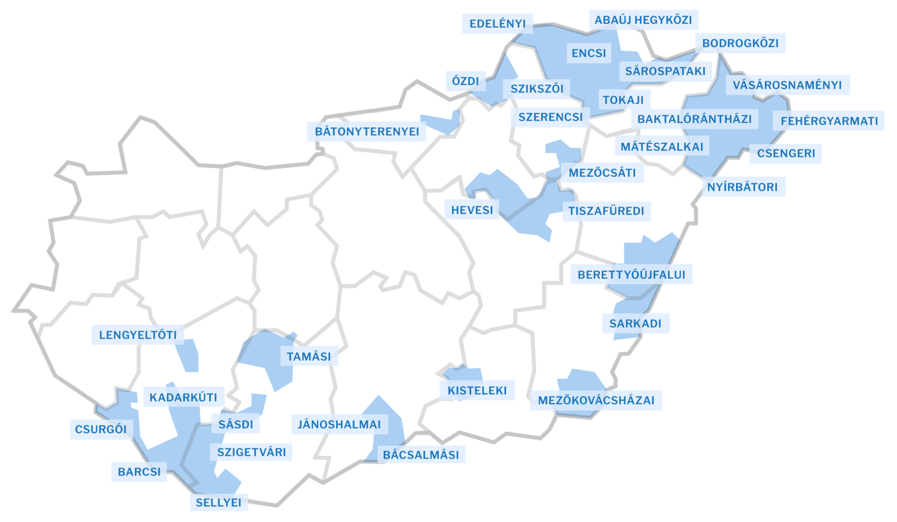

A mélyszegénységaz egyik legsúlyosabb társadalmi gond a mai Magyarországon: mintegy félmillió ember tartozik ebbe a kategóriába.
Ezt a csoportot halmozottan hátrányos helyzetűnek is nevezik, mivel több dimenzióban is hátrányok sújtják. Nagy az esélye, hogy egy mélyszegénységben élő ember
kiszorul a munkaerő-piacról;
egészségi állapota rosszabb az átlagosnál;
iskolai végzettsége alacsonyabb az átlagosnál;
az ország leszakadó térségeiben lakik;
rossz közlekedési ellátottságú és infrastruktúrájú kistelepülésen lakik;
kevésbé fér hozzá a bölcsődéhez, óvodához, orvosi ellátáshoz és az egyéb szolgáltatásokhoz.
Egy mélyszegénységben élő családban az egy főre jutó jövedelem ötvenezer forint alatt van. A közoktatási rendszer általában tovább erősíti a hátrányos helyzetűek lemaradását. A mélyszegénység különösen veszélyezteti a gyerekeket és az időseket. A cigányság aránya körülbelül e csoport negyven-ötven százalékát teszi ki.
A 2011-es népszámláláskor a leghátrányosabb helyzetű (LHH) kistérségekben a lakások 16 százaléka komfort nélküli, szükség- és egyéb lakás volt. A 2015. eleji adatok alapján az érintett lakások 10 százalékában nem volt vezetékes víz (ez az országos arány kétszerese). A vizsgált települések 54 százalékában nincs helyben háziorvos. E térségekben az átlagosnál kevesebben engedhetik meg maguknak, hogy autóval közlekedjenek. Nagy hátrányt jelez az alacsony szélessávúinternet-ellátottság is: itt 2014-ben ezer lakosra 158 előfizetés jutott, százzal kevesebb, mint országosan.
Magyarországon a mélyszegénységben élők területi elrendeződése lényegében egybeesik a leghátrányosabb helyzetű kistérségek (LHH) eloszlásával:
 1. ábra: LHH kistérségek Magyarországon napjainkban (forrás: www.nfu.hu )
A legfejletlenebb járások az ország periferikus részein helyezkednek el, jórészt az észak-keleti, a keleti és a déli határ mentén. Az országhatár Borsod-Abaúj-Zemplén megyétől kezdődő, Szabolcs-Szatmár-Bereg és Hajdú-Biharon át Békésig húzódó, 20 járást érintő szakaszán a Sátoraljaújhelyi és a Gyulai járás kivételével mindegyik a legelmaradottabbak közé tartozik, és a Dél-Dunántúlon is összefüggő sávot alkot a három horvát határ menti járás (Csurgói, Barcsi, Sellyei). A borsodi járások fele, a szabolcsiak héttizede tartozik a legelmaradottabbak közé.
E körzetekben a települések 61 százaléka ezer főnél kisebb lélekszámú, miközben országosan ez az arány 56 százalék. A legelmaradottabb járások népességének 10 százaléka cigány származású, ami jóval meghaladja a 3,2 százalékos országos átlagot. Az itt élők iskolai végzettsége is elmarad a többiekétől: a legelmaradottabb járások 7 éves és annál idősebb népességének közel fele legfeljebb az általános iskolát végezte el, míg országosan ez csak a lakosság harmadára jellemző. A felsőfokú végzettségűek aránya mindössze 7,8 százalék, vagyis az országos átlag felét sem éri el, az érettségit szerzők 18 százalékos aránya pedig csupán héttizede az országos átlagnak. A helyben élők rendkívül alacsony iskolázottságát az is magyarázza, hogy a képzett munkaerő folyamatosan elvándorol ezekből a térségekből.
Részlet a KSH „Háztartások életszínvonala” című, 2014. novemberében megjelent tanulmányából (LINK):
„A közgondolkodásban a szegénységet általában a jövedelmi szegénységgel azonosítják. A szegénység vagy társadalmi kirekesztődés azonban ennél tágabb fogalom. Az Európai Unió a szegénység vagy társadalmi kirekesztődés kockázatának mérésére egy összetett mutatót dolgozott ki, amely a lehető legtágabban határozza meg a szegénységet. Az elsődleges mutató (AROPE) három tényező együttes vizsgálatát foglalja magában: a jövedelemhiányon túl számba veszi az anyagilag elérhető javak körét, valamint a munkaerőpiaccal való kapcsolatot is. Ez az összetett mutató szándékosan a legtágabb módon értelmezi a szegénység lehetséges kereteit, de ez nem azt jelenti, hogy ennyi lenne a tényleges szegény, mivel azokat is beszámítja, akik a szegénység vagy társadalmi kirekesztődés kockázatának ki vannak téve. Ez a lehető legnagyobb halmaz, azok is beletartoznak ebbe a csoportba, akik vagyonukból élnek, és nem dolgoznak (nagyon alacsony munkaintenzitású háztartásban élnek), vagy akik nem jövedelmi szegények, de saját bevallásuk szerint nem engedhetik meg maguknak a fogyasztás egyes tételeit.
Az Eurostat által használt összetett szegénységi és kirekesztődési mutató (AROPE) az alábbi három dimenziót foglalja magában:
1. Relatív jövedelmi szegénység:
a medián ekvivalens jövedelem 60%-ánál, azaz a szegénységi küszöbnél kevesebb jövedelemmel rendelkező háztartásokban élő személyek aránya.
2. Súlyos anyagi depriváció:
alapvető javakhoz való elégtelen hozzáférést, anyagi nélkülözést jelent. Súlyosan depriváltnak tekintjük azokat a személyeket, akikre az alábbi kilenc tétel közül legalább négy vonatkozik:
hiteltörlesztéssel vagy lakással kapcsolatos fizetési hátraléka van;
lakás megfelelő fűtésének hiánya;
váratlan kiadások fedezetének hiánya;
kétnaponta hús, hal, vagy azzal egyenértékű tápanyag fogyasztásának hiánya;
évi egyhetes, nem otthon töltött üdülés hiánya,
anyagi okból nem rendelkezik személygépkocsival;
anyagi okból nem rendelkezik mosógéppel;
anyagi okból nem rendelkezik színes televízióval;
anyagi okból nem rendelkezik telefonnal.
3. Nagyon alacsony munkaintenzitás (munkaszegénység):
azokban a háztartásokban élők tartoznak ebbe a csoportba, amelyekben a munkaképes korú háztartástagok a megelőző évben a lehetséges munkaidejüknek legfeljebb egyötödét töltötték munkával. Azok a személyek vannak kitéve a szegénység vagy társadalmi kirekesztődés kockázatának, akik a fenti három fő dimenzió közül egyben vagy többen érintettek. E mutató szerint 2013-ban Magyarországon a teljes lakosság 31,1%-át, azaz 3 millió 44 ezer embert érintett a relatív jövedelmi szegénység vagy társadalmi kirekesztődés kockázatának legalább egy dimenziója, ami 2,4 százalékponttal, azaz 241 ezer fővel alacsonyabb a 2012. évinél. Az egyes dimenziókat tekintve 0,3 százalékponttal nőtt a relatív jövedelmi szegények aránya, a munkaszegények aránya 0,3 és a súlyos anyagi deprivációban élők aránya 2,9 százalékponttal csökkent. Azok száma, akiket mind a három szegénységi dimenzió együttesen sújtott 461 ezer főt tett ki, ami 18 ezer fővel több, mint a megelőző évben.” (KSH. 15-16. oldal)